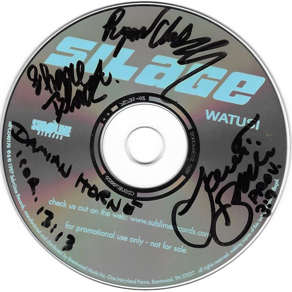
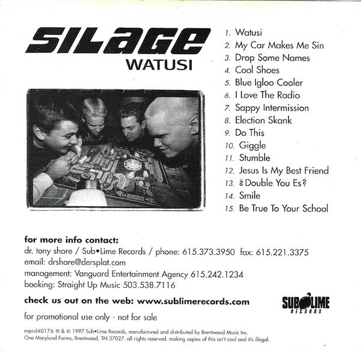
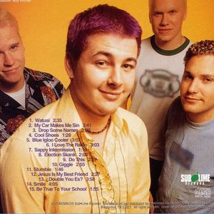

Watusi
"And I just want chicken and milk!"
[ Discography ] [ Archive ] [ Videos ] [ Bio ] [ About ]
Watusi
Watusi is the first album released by Silage on Sublime Records. It's an energetic punk and ska themed journey featuring the stand out tracks "My Car Makes Me Sin," "Drops Some Names" and the albums title track "Watusi." Recorded at Front Page Recorders Watusi was released July 15th 1997.
You can listen to Watusi on Spotify.


The above scans are of my promotional copy of Watusi I received from Silage management company Straight Up Music. It was autographed at my first Silage show.
Track List:
Lance Black - Lead Guitar, Vocals, Backing Vocals
Ryan Clark - Drums
Shane Black - Bass, Rhythm Guitar, Piano, Backing Vocals
- Watusi
- My Car Makes Me Sin
- Drop Some Names
- Cool Shoes
- Blue Igloo Cooler
- I Love The Radio
- Sappy Intermission
- Election Skank
- Do This
- Giggle
- Stumble
- Jesus Is My Bestfriend
- ? Double You Es ?
- Smile
- Be True To Your School / *Hidden Track* John Jonethis Watusi Lounge Cover
Lance Black - Lead Guitar, Vocals, Backing Vocals
Ryan Clark - Drums
Shane Black - Bass, Rhythm Guitar, Piano, Backing Vocals

Read more about Watusi on Discogs. Read a review of Watusi on Album Du Jour.